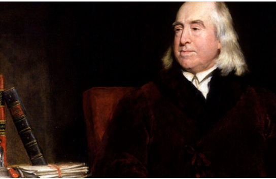
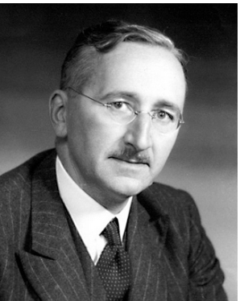
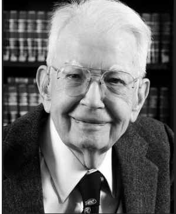

JIGSAW- ¿CÓMO SE ORGANIZA LA ACTIVIDAD ECONÓMICA?
En una economía existen recursos limitados y millones de decisiones que deben coordinarse: qué producir, cuánto producir, cómo producir y para quién. Una de las formas de organizar estas decisiones es mediante los mercados, en los que consumidores y empresas interactúan y toman decisiones sobre la compra, venta y producción de bienes y servicios.
Pero ¿cómo consigue un mercado coordinar tantas decisiones? ¿Qué papel desempeñan los precios? ¿Por qué existen las empresas? ¿Qué función tiene el empresario? ¿Cómo se asignan los recursos? Para responder a estas preguntas vamos a conocer las ideas de cuatro economistas: Adam Smith, Jeremy Bentham, Friedrich Hayek y Ronald Coase.
¿Cómo vamos a trabajar?
Utilizaremos la técnica cooperativa Jigsaw o puzle de expertos.
1. Grupo de origen: Cada miembro del equipo recibirá un autor diferente.
2. Grupo de expertos: Os reuniréis con los compañeros que tengan el mismo autor. Leeréis el texto, investigaréis y prepararéis vuestra explicación.
3. Regresamos al grupo de origen: Cada experto enseñará a sus compañeros lo que ha descubierto.
4. Construimos el puzle: Entre todos relacionaréis las cuatro perspectivas con el funcionamiento de los mercados y la asignación de recursos.
EXPERTO 1 · ADAM SMITH
|
El interés individual y el intercambio "Cada individuo está siempre esforzándose por encontrar la inversión más beneficiosa para cualquier capital que tenga. Es verdad que, por regla general, ni intenta promover el interés general ni sabe en qué medida lo está promoviendo. Al orientar esa actividad de manera que su producción tenga el mayor valor posible, busca solamente su propio beneficio; pero, en este caso, como en muchos otros, una mano invisible le conduce a promover un fin que no entraba en sus intenciones. Y no siempre es malo para la sociedad que ese fin no formase parte de sus propósitos. Al perseguir su propio interés, frecuentemente promueve el de la sociedad de una manera más eficaz que cuando realmente pretende favorecerlo. No es por la benevolencia del carnicero, del cervecero o del panadero por lo que esperamos nuestra cena, sino por la consideración que ellos tienen de su propio interés. No nos dirigimos a su humanidad, sino a su propio interés, y nunca les hablamos de nuestras necesidades, sino de las ventajas que obtendrán." Adam Smith, La riqueza de las naciones. Fragmentos del Libro I, cap. II y Libro IV, cap. II. |
EXPERTO 2 · JEREMY BENTHAM
|
Interés individual y utilidad "Lo que caracteriza al utilitarismo inglés es el recurso a la experiencia. Como todos los hombres aspiran a ser felices, y eso es indiscutible, los utilitaristas creen que el criterio para establecer qué está bien y qué está mal en la sociedad no es otro que la felicidad de la mayoría. Bentham concibe al hombre como un ser egoísta en busca de su propio placer y beneficio, pero capaz de ser orientado hacia comportamientos útiles a la sociedad. Para analizar este problema introduce el término utilidad, que está directamente vinculado con el de felicidad. Utilidad y felicidad son, pues, dos ideas equivalentes en su pensamiento. Las personas se mueven por el interés privado, buscan lo que les es útil porque aspiran, así, a la felicidad. Definida la utilidad como principio de conducta, habrá que preguntarse cómo se concilian la utilidad individual y la colectiva o el interés privado y el interés público. Para Bentham, el interés de la comunidad consiste en la suma de los intereses individuales. De esta forma, convierte la ética en un cálculo sobre qué placeres son más convenientes para el conjunto de la sociedad, entendida como la suma de sus individuos. La satisfacción de los deseos de los individuos tendrá como consecuencia un mayor bienestar para todos. Así, en A Fragment on Government (1776) establece lo que será el axioma del principio de utilidad: «la mayor felicidad de la mayoría es la medida de lo bueno y lo malo."
|
 |
EXPERTO 3 · FRIEDRICH HAYEK
|
El precio como mecanismo de coordinación "El problema económico de una sociedad no consiste simplemente en decidir cómo utilizar unos recursos que conocemos, sino en utilizar un conocimiento que no se encuentra concentrado en una sola persona. El conocimiento de las circunstancias particulares de tiempo y lugar está disperso entre muchos individuos. Cada una de estas personas posee una pequeña parte del conocimiento necesario para tomar decisiones económicas. ¿Cómo puede utilizarse todo este conocimiento para coordinar las decisiones de millones de personas? El sistema de precios desempeña aquí una función esencial. Un precio puede transmitir información sobre las circunstancias de un mercado y permitir que las personas adapten sus decisiones sin necesidad de conocer todas las causas que han provocado ese cambio. Así, el sistema de precios permite coordinar las decisiones de personas que poseen conocimientos diferentes y que actúan de manera independiente."
|
 |
EXPERTO 4 · RONALD COASE
|
¿Por qué existen las empresas? "Si la coordinación de la actividad económica puede realizarse mediante el mecanismo de los precios, cabe preguntarse por qué existe la empresa. ¿Por qué un empresario organiza determinadas actividades dentro de una empresa en lugar de recurrir continuamente al mercado? La utilización del mecanismo de precios no es gratuita. Para realizar una transacción es necesario descubrir con quién queremos contratar, conocer las condiciones del intercambio, negociar y establecer los acuerdos necesarios. Estas actividades tienen un coste. Cuando resulta menos costoso organizar una determinada actividad dentro de una empresa que realizarla mediante contratos independientes en el mercado, puede resultar conveniente sustituir el intercambio de mercado por la organización empresarial. De este modo, la existencia de costes asociados a la utilización del mecanismo de precios ayuda a explicar por qué existen las empresas y por qué unas actividades se realizan dentro de ellas mientras otras se coordinan mediante el mercado."
|
 |
Adam Smith
Investigad:
¿Qué relación establece Adam Smith entre el interés individual, el intercambio y el interés de la sociedad? Intentad comprender especialmente qué significa la expresión «mano invisible».¿Qué busca principalmente el individuo según Smith?
¿Cómo puede su búsqueda de beneficio contribuir a satisfacer las necesidades de otras personas?
¿Qué papel desempeñan el intercambio y el mercado?
Pensad en una empresa actual que busque obtener beneficios. ¿Cómo puede su actividad satisfacer las necesidades de los consumidores?
Fuentes consultadas:
Jeremy Bentham
Preguntas:
Para los utilitaristas, ¿cuál es el objetivo de las personas?
Según Bentham, ¿las personas son egoístas o altruistas? Explica tu respuesta.
¿Qué es la utilidad para Bentham? ¿Qué relación tiene con el interés privado?
Si todo el mundo busca su propio interés, ¿cómo se supone que se conciliarán los intereses de todos los individuos de la sociedad?
Consulta el significado del término «hedonismo». ¿Qué relación tiene con el utilitarismo de Bentham?
INVESTIGA
Investiga por qué la teoría utilitarista ha sido importante para el pensamiento económico. ¿Qué relación puedes encontrar entre la idea de utilidad y las decisiones de los consumidores?
Fuente consultada:
Friedrich Hayek
Preguntas:
¿Dónde se encuentra, según Hayek, el conocimiento necesario para tomar decisiones económicas?
¿Por qué sería imposible que una sola persona conociera toda la información necesaria para organizar una economía?
¿Qué función cumplen los precios según el texto?
Imagina que el precio de un determinado recurso aumenta mucho. ¿Qué decisiones podrían tomar los consumidores y las empresas como consecuencia?
¿Crees que los precios permiten coordinar las decisiones de millones de personas aunque estas no se conozcan entre sí? Pon un ejemplo.
INVESTIGA
Investiga qué significa que el precio actúa como una «señal» en un mercado. Pon un ejemplo de un producto cuyo precio haya cambiado y explica qué información puede transmitir ese cambio.
Fuente consultada:
Ronald Coase
Preguntas:
Si el mercado permite coordinar las decisiones mediante los precios, ¿por qué crees que existen las empresas?
¿Qué costes puede tener realizar una operación mediante el mercado?
Según Coase, ¿cuándo puede resultar más conveniente organizar una actividad dentro de una empresa?
Pon un ejemplo de una actividad que una empresa podría realizar internamente en lugar de contratarla en el mercado.
¿Crees que las empresas y los mercados son formas completamente diferentes de organizar la actividad económica o pueden complementarse? Razona tu respuesta.
INVESTIGA
Investiga qué son los «costes de transacción» y explica con tus palabras por qué este concepto ayuda a entender la existencia de las empresas.
Fuente consultada:
VOLVEMOS AL GRUPO ORIGINAL. "Ahora cada experto/a aporta su pieza"
Ahora cada miembro del equipo se convertirá en el experto de su autor y tendrá que explicar al resto lo que ha aprendido. Cada experto/a dispondrá de 2-3 minutos para presentar su texto.
Deberá explicar:
- El autor: ¿quién es y cuál es la idea que hemos investigado?
- El texto: ¿qué quiere decir con sus propias palabras?
- La idea fundamental: ¿qué nos aporta este autor para comprender cómo se organiza la actividad económica?
Mientras escuchas a tus compañeros/as, completa esta tabla con tus propias palabras. No copies literalmente las respuestas.
| Autor | Idea principal | Concepto clave | ¿Qué nos ayuda a entender sobre la actividad económica? |
| Adam Smith | |||
| Jeremy Bentham | |||
| F. Hayek | |||
| R. Coase |
1. ¿Qué tienen en común las ideas de los cuatro autores? ¿Qué diferencias encontráis entre sus planteamientos?
2. ¿Qué autor os ayuda mejor a comprender el funcionamiento de los mercados? ¿Por qué?
3. Elabora una definición propia de mercado a partir de los cuatro textos anteriores.
|
Hemos visto que el mercado permite coordinar decisiones y asignar recursos, pero todavía nos queda una pregunta: ¿quién toma esas decisiones? En la próxima sesión descubriremos quiénes son los principales agentes económicos, qué funciones desempeñan y cómo se relacionan entre sí. |